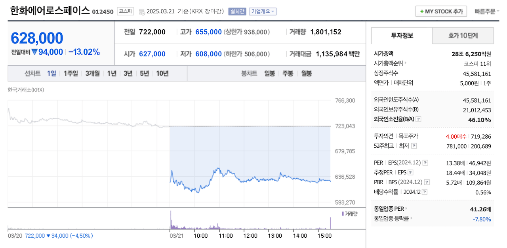

한화에어로스페이스 유상증자 건을 보며 드는 생각들
전쟁으로 돈을 버는게 좋냐니 인권적으로 문제가 있다니 등등 비판을 들을 수는 있겠지만, 적어도 금융적인 목적에서 국내 방산 기업들에 대해 개인적으로 우크라이나-러시아 전쟁 발발 이후 지금껏 호의를 가지고 있었다. 현재는 직접 투자하고 있진 않지만 과거엔 푼돈이나마 용돈 벌이를 해준 고마운 기업들이기도 하고 말이다.
그런데 그 호의를 무시하듯이 몰래 뒷통수를 갈겨버린 사건 하나가 어제 국장이 마감된 후 기습적으로 벌어졌다.
한화에어로스페이스 유상증자 결정 (3월 20일)
 사측의 기습 공격에 피가 낭자하고 있는 끔찍한 장면 (네이버증권)
무려 3조 원이 넘는 역대급 대규모의 유상증자다. 그것도 돈을 잘 벌고 있는 우량한 기업이 투자를 위해 주주들에게 돈을 더 내놔라고 협박할 거라는 말이다. 물론 돈을 줘도 주가는 떨어지는 매직이 펼쳐질 것이고 말이다.
왜 하필 이 때일까?
왜 하필이면 상법 개정안이 국회를 통과한지 얼마되지 않은 이 때에 기습 유상증자를 결정한 것일까? 물론 아직 권한대행이 거부권을 행사하기 전이긴 하다.
왜 하필이면 공매도 재시행이 얼마 남지 않은 이 때에 기습 유상증자를 결정한 것일까?
왜 하필이면 경영권 승계 작업이 진행 중인 것으로 의심되는 재벌이 기습 유상증자를 결정한 것일까?
왜 하필이면 멀쩡한 자사 조선 기업 놔두고 일반 방산 기업이 조선사에 투자를 해야 하는 걸까?
왜 하필이면 이 때에 유상증자를 결정하여 애꿎은 주주들 뒷통수를 가격한 것일까? 의심은 너무나 많다. 하지만 의심한다고 해도 이제부터 일어날 주주들의 손해를 회복시킬 방법이 없다. 상법에는 회사 오너들에게 손해만 안 끼치면 문제가 없다고 젹혀있으니 말이다. 나중에 유상증자를 취소한들 주가는 하락한 상태일 테니 역시나 회복할 방법이 없을 것 같고 말이다.
남은 건 또 그것 뿐일까?
최근 여러 기업의 수 건의 유상증자가 기습 발표 되었다 소액주주들의 원성을 폭발시켰던 일이 있다. 얼마나 심했으면 맞는 칼이 없는 금감원까지 나섰을 정도니 말이다. 이번에도 금감원이 나선다고 할 정도면 이번 일이 얼마나 심한지 잘 알 수 있을 것이다.
이제 코리아 디스카운트 해소를 위해 남은 건 정말 상법 개정 뿐인 듯하다. 이 정도면 여당과 재계도 상법 개정의 필요성을 인정해야 도리에 맞는 것이지 않을까?
만약 상법 개정안이 거부되면 국내에서 중장기 투자할 만한 건 결국 은행주 정도 밖에 안 남을 것 같다. 오너라는 개념이 없는 기업은 은행 외에 무엇이 있을까?
아니면 다 포기하고 미장으로 완전히 가야할 판이다. 정부와 재계와 여당이 국장에 있지 말라고 하는데 미련 가질 이유가 없을 것 같다.